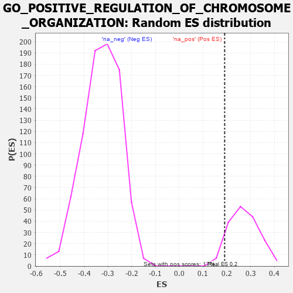

| | | Dataset | 7d |
| Phenotype | NoPhenotypeAvailable |
| Upregulated in class | na_pos |
| GeneSet | GO_POSITIVE_REGULATION_OF_CHROMOSOME_ORGANIZATION |
| Enrichment Score (ES) | 0.19094352 |
| Normalized Enrichment Score (NES) | 0.7033229 |
| Nominal p-value | 0.9298246 |
| FDR q-value | 0.95827997 |
| FWER p-Value | 1.0 |
Table: GSEA Results Summary
 Fig 1: Enrichment plot: GO_POSITIVE_REGULATION_OF_CHROMOSOME_ORGANIZATION
Fig 1: Enrichment plot: GO_POSITIVE_REGULATION_OF_CHROMOSOME_ORGANIZATION
Profile of the Running ES Score & Positions of GeneSet Members on the Rank Ordered List
| PROBE | GENE SYMBOL | GENE_TITLE | RANK IN GENE LIST | RANK METRIC SCORE | RUNNING ES | CORE ENRICHMENT | | 1 | NBN | | | 405 | 0.696 | -0.0208 | Yes |
| 2 | EED | | | 409 | 0.690 | 0.0089 | Yes |
| 3 | ERCC1 | | | 453 | 0.660 | 0.0323 | Yes |
| 4 | CCNB1 | | | 581 | 0.601 | 0.0425 | Yes |
| 5 | PARN | | | 660 | 0.572 | 0.0576 | Yes |
| 6 | MRE11 | | | 693 | 0.560 | 0.0780 | Yes |
| 7 | WDR61 | | | 734 | 0.549 | 0.0969 | Yes |
| 8 | RAD21 | | | 779 | 0.538 | 0.1148 | Yes |
| 9 | CTR9 | | | 964 | 0.492 | 0.1130 | Yes |
| 10 | KMT2A | | | 1130 | 0.458 | 0.1122 | Yes |
| 11 | KAT7 | | | 1240 | 0.440 | 0.1176 | Yes |
| 12 | DKC1 | | | 1292 | 0.431 | 0.1300 | Yes |
| 13 | CDC27 | | | 1585 | 0.377 | 0.1095 | Yes |
| 14 | PAF1 | | | 1588 | 0.376 | 0.1257 | Yes |
| 15 | KMT2E | | | 1730 | 0.350 | 0.1231 | Yes |
| 16 | ESPL1 | | | 1734 | 0.349 | 0.1380 | Yes |
| 17 | FMR1 | | | 1816 | 0.334 | 0.1423 | Yes |
| 18 | RTF1 | | | 1844 | 0.329 | 0.1533 | Yes |
| 19 | SMAD4 | | | 1860 | 0.326 | 0.1656 | Yes |
| 20 | CUL3 | | | 1893 | 0.321 | 0.1755 | Yes |
| 21 | TASOR | | | 1931 | 0.316 | 0.1846 | Yes |
| 22 | SART3 | | | 2084 | 0.293 | 0.1782 | Yes |
| 23 | MORC2 | | | 2171 | 0.281 | 0.1796 | Yes |
| 24 | NSD3 | | | 2279 | 0.263 | 0.1775 | Yes |
| 25 | SIN3A | | | 2361 | 0.251 | 0.1783 | Yes |
| 26 | FEN1 | | | 2446 | 0.237 | 0.1780 | Yes |
| 27 | KDM1A | | | 2447 | 0.237 | 0.1883 | Yes |
| 28 | CDT1 | | | 2505 | 0.226 | 0.1909 | Yes |
| 29 | ATR | | | 2800 | 0.183 | 0.1618 | No |
| 30 | BECN1 | | | 2828 | 0.179 | 0.1662 | No |
| 31 | WDR5 | | | 2892 | 0.168 | 0.1656 | No |
| 32 | RTEL1 | | | 3010 | 0.148 | 0.1573 | No |
| 33 | BRD7 | | | 3018 | 0.147 | 0.1628 | No |
| 34 | MAPK3 | | | 3589 | 0.062 | 0.0934 | No |
| 35 | CDC16 | | | 3724 | 0.038 | 0.0782 | No |
| 36 | NEK2 | | | 3871 | 0.016 | 0.0604 | No |
| 37 | NIPBL | | | 3900 | 0.010 | 0.0573 | No |
| 38 | TAL1 | | | 4064 | -0.018 | 0.0375 | No |
| 39 | CTBP1 | | | 4323 | -0.064 | 0.0077 | No |
| 40 | LRRK2 | | | 4467 | -0.087 | -0.0066 | No |
| 41 | SNW1 | | | 4514 | -0.096 | -0.0082 | No |
| 42 | PNKP | | | 4572 | -0.111 | -0.0105 | No |
| 43 | GATA3 | | | 4614 | -0.120 | -0.0105 | No |
| 44 | WBP2 | | | 4780 | -0.153 | -0.0246 | No |
| 45 | ATRX | | | 4929 | -0.184 | -0.0353 | No |
| 46 | XRCC5 | | | 4946 | -0.187 | -0.0292 | No |
| 47 | DDX11 | | | 5102 | -0.225 | -0.0390 | No |
| 48 | ATM | | | 5210 | -0.249 | -0.0416 | No |
| 49 | TNKS2 | | | 5239 | -0.254 | -0.0340 | No |
| 50 | RAD50 | | | 5314 | -0.276 | -0.0313 | No |
| 51 | GNL3 | | | 5614 | -0.349 | -0.0539 | No |
| 52 | CDC23 | | | 5756 | -0.394 | -0.0545 | No |
| 53 | TNKS | | | 6138 | -0.516 | -0.0802 | No |
| 54 | UBE2N | | | 6407 | -0.621 | -0.0869 | No |
| 55 | TPR | | | 6597 | -0.709 | -0.0799 | No |
| 56 | CDK9 | | | 7266 | -1.138 | -0.1147 | No |
| 57 | NEK7 | | | 7415 | -1.285 | -0.0773 | No |
| 58 | ARRB1 | | | 7935 | -3.377 | 0.0045 | No |
Table: GSEA details [plain text format]

Fig 2: GO_POSITIVE_REGULATION_OF_CHROMOSOME_ORGANIZATION: Random ES distribution
Gene set null distribution of ES for GO_POSITIVE_REGULATION_OF_CHROMOSOME_ORGANIZATION